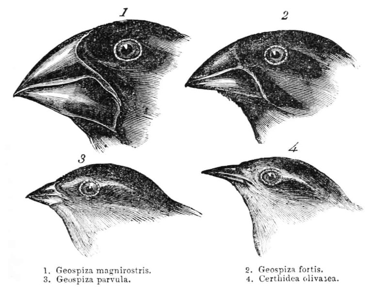
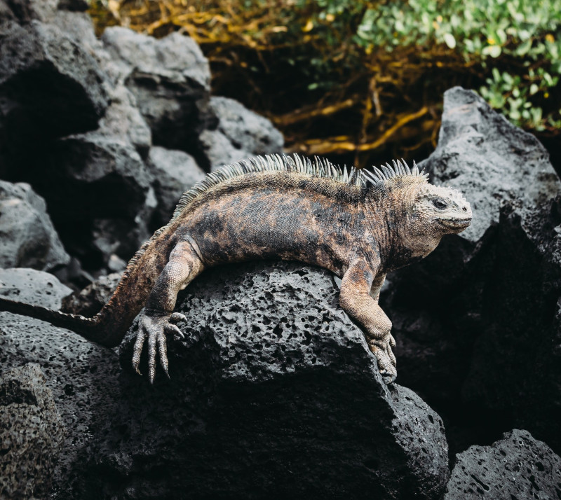

En la Teoría de la Evolución Darwin propuso que las especies cambian con el tiempo, que las especies nuevas provienen de especies preexistentes y que todas las especies comparten un ancestro común.
Teoría de la evolución
En este modelo, cada especie tiene su propio conjunto de diferencias heredables (genéticas) en relación con su ancestro común, las cuales se han acumulado gradualmente durante periodos de tiempo muy largos. Eventos de ramificación repetidos, en los que las nuevas especies se desprenden de un ancestro común, producen un "árbol" de muchos niveles que une a todos los seres vivos.
Darwin se refirió a este proceso, en el que los grupos de organismos cambian en sus características heredables a lo largo de generaciones, como "descendencia con modificaciones".Hoy en día, lo llamamos Evolución.
El boceto de Darwin
muestra cómo una especie puede
ramificarse en dos a lo largo del tiempo, y cómo este proceso puede repetirse muchas veces en el "árbol
genealógico" de un grupo de especies emparentadas.sostiene que las especies evolucionan a través del
tiempo
mediante la
selección natural. Esto significa que las características que son útiles para la supervivencia y la
reproducción
de un organismo se vuelven más comunes en la población a medida que se transmiten de una generación a
otra.

{kind=link}
Por ejemplo, si un grupo de animales tiene una variación en su color de pelo, los animales con un color de pelo que los hace más difíciles de ver por sus depredadores tendrán más éxito en la reproducción y sobrevivirán más tiempo, lo que aumentará la frecuencia de ese color de pelo en la población.
La Teoría de la Evolución de Darwin es uno de los conceptos fundamentales en la biología moderna y ha tenido un impacto profundo en la comprensión de la vida en la Tierra. Aunque sus ideas fueron controvertidas en su época, causando un gran revuelo en el mundo científico y religioso de su época puesto que contradijeron la creencia tradicional de que las especies eran fijas e inmutables, y que habian sido creadas por Dios, hoy en día son ampliamente aceptadas por la comunidad científica y han sido confirmadas por una gran cantidad de evidencia empírica.



